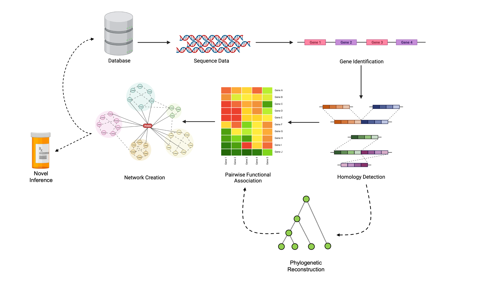

Workshop Overview
Aidan Lakshman1
Source:vignettes/CompGenomicsBioc2022.Rmd
CompGenomicsBioc2022.RmdComparative Genomics with SynExtend and DECIPHER
Authors: Aidan Lakshman, Nicholas Cooley, Erik S. Wright2.
Last modified: 10 May, 2022.
Description
This workshop consists of an interactive, instructor-led demonstration of common analyses in comparative genomics.
The immediate goal of this session is to use sequence data to uncover networks of functionally associated genes. These networks consist of genetic regions under shared evolutionary pressure, which have previously been shown to imply some degree of conserved function. The complete pipeline consists of the following:

We’ll walk through obtaining sequence data, working with it, identifying genes, finding orthologous regions, creating phylogenetic reconstructions, and then identifying functional association networks. These networks can be used to make novel hypotheses about protein functional pathways.
The overall purpose of this workshop is slightly more broad: to teach users how to utilize a wide variety of tools for computational genomics. Walking through our pipline serves as a convenient mechanism to guide instruction in a set of broadly applicable tools that can easily be repurposed to many other problems.
This workshop will showcase the following functionalities through hands-on tutorials with real data:
- Reading sequence data into R
- Aligning sequences
- Phylogenetic reconstruction
- Identifying coding and non-coding regions
- Annotating gene function
- Finding clusters of orthologous genes (COGs)
- Predicting functional association between COGs
All of these analyses will be conducted entirely within R, and are
achievable using only raw sequencing data along with the
DECIPHER and SynExtend packages.
Prerequisites
Both DECIPHER and SynExtend are developed
to be as simple as possible for the end user. As such, the only
pre-requisites for this workshop are the following:
- Basic knowledge of R syntax
- Basic knowledge of genomics data (DNA, RNA, amino acids)
Participants can expect to fully understand the entire workshop with only the above qualifications. However, users that want to dig deeper into the content covered may consider checking the DECIPHER website for additional tutorials.
Participation
Attendees will be expected to participate by following along with the examples provided in the workshop. Rather than just listening to instruction, attendees are expected to run the examples for themselves and ask questions related to either steps in the workshop or related scenarios these methods could be applicable to for their own work.
Time outline
Timing is estimated and may vary depending on questions from audience.
| Activity | Package | Time |
|---|---|---|
| Introduction and Setup | 5 min | |
| Working with Genomic Data | DECIPHER |
10 min |
| Gene Calling and Annotation | DECIPHER |
15 min |
| Finding COGs | SynExtend |
15 min |
| Phylogenetic Reconstruction | DECIPHER |
15 min |
| Identifying Co-evolving Gene Collectives | SynExtend |
15 min |
| Concluding Remarks | 5 min | |
| Q & A | Remaining Time |
Workshop goals and objectives
The “big picture” goal of this workshop is to enable researchers to conduct computational analyses involving genomics data independently on a wide variety of problems. Not every attendee will need to identify co-evolving gene clusters, but having the ability to conduct analyses like aligning genomes, creating phylogenetic trees, or finding shared selective pressure across genomes is valuable for any researcher in molecular biology to be able to quickly analyze preliminary data and guide experimental hypotheses.
At the conclusion of this workshop, attendees will possess a toolkit of analyses they can apply to their own data. Computational analyses are increasingly valuable in the modern era of microbiology, and attendees of this workshop will gain sufficient expertise to be able to conduct basic in silico analyses, even if they don’t have a deep bioinformatics background.
Learning goals
- Describe how to work with and visualize sequencing data in R
- Identify methods to analyze evolutionary forces on genetic regions
- Identify orthologous genomic regions
- Identify and annotate gene function